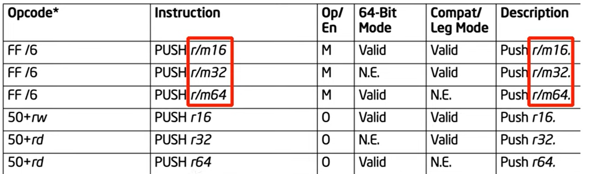

r/m16 r/m32 r/m64
r/m is a way to specify a register or a memory value
there are different versions of PUSH in 64bit execution mode
1. push a 64 bit value from a register
2. push a 64 bit value from memory
there are other forms, not to be discussed yet
